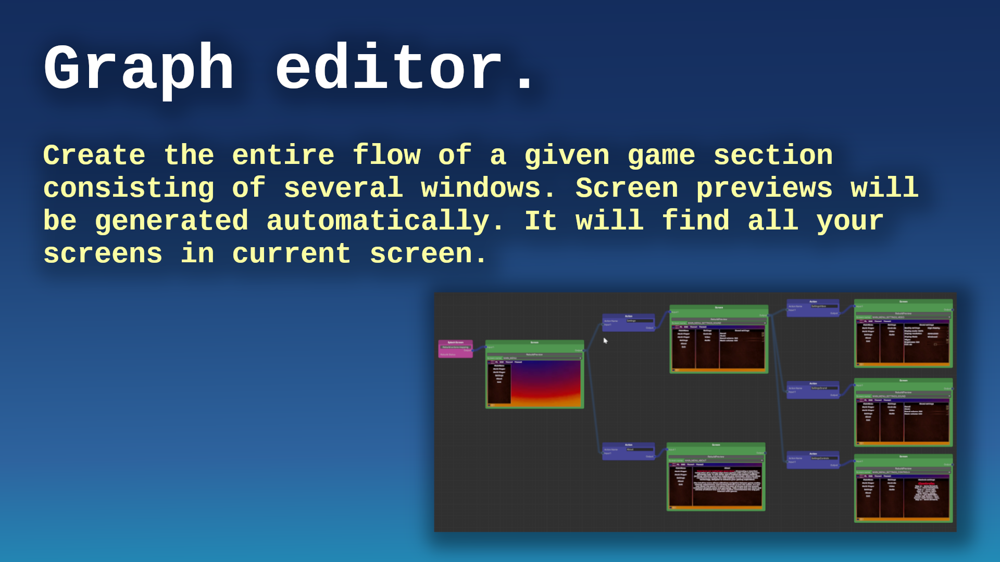

CoDriven Advanced UI documentation version 1.0.0

Thank you for buying CoDriven Advanced UI. I hope it will speed up your workflow and help to finish your game faster 😄.
- CoDriven Advanced UI documentation version 1.0.0
- The main benefits of CoDriven Advanced UI is:
- 
- Note: this tool include: FULLY working 3D multiplayer FPS (mirror/LAN) with:
- Limitations of the current version of CoDriven Advanced UI:
- CoDriven Advanced UI components
The main benefits of CoDriven Advanced UI is:
- full source code included
- build in nodes with screen preview so you can connect them by actions and use these actions to move between screens, but you can move between screens without it by just a simple method call with screen name (more about here)
- easy language change and translation editor (built-in) (more about here)


- easy theming and changing of the current theme! (more about here)

- easy and powerful styling but in the code - no more CSS/USS! and much easier, because you will not modify text style for any component :) (more about here),
- easily add your own custom Editors in Unity. You can check how Translation Editor was made - because it was made with its own code I mean CoDriven Advanced UI :)
- really easy event handling! (you can handle events on part of your screen, screen as a whole, globally, or event in many places at the same time) (more about here)
- CoDriven Advanced UI contains controls from UI Toolkit and a few more, like a floating window, and a draggable panel. This will be probably improved in the future (more about here)
- implemented with observer pattern in mind to observe changes in UI or trigger UI changes from external events (more about here)
- multiple scenes with examples like simple one theme, simple two themes, a few game scenes with maps and main menu, other (more about here)
- easy passing player data to UI by event callback
- helper functions for your game and tools for multiplayer with a mirror
- **included: FULLY working 3D multiplayer FPS (mirror/LAN) with main menu and in-game menu ** click here
Note: this tool include: FULLY working 3D multiplayer FPS (mirror/LAN) with:
- grappling hook weapon created from scratch using math in code for springs (without using the build in spring classes), so you can do more,
- car driving logic: spring camera attached to the seat and shooting while driving + free camera rotation + FPP/TPP camera during driving 😄,
- car models includec (not top quality 😄)
- weapon recoil using spring,
- weapon attached to the hand bone
- jumping
- muzzle flashes,
- sounds for actions,
- health status
- fully working menu
- settings changes like resolution/refresh rate, sound, music, mouse sensitivity, and more
- multiple weapons like pistol, machinegun, grenade launcher, sniper with simple zooming, rocket launcher (all model included with blender files .blend)
- weapon recoil
- maps for the game and simple models like trees, houses,
- you can play with friends :)


More about multiplayer games click here
Please read the below brief overview of all important sections that will help you to understand how it works all together.
Limitations of the current version of CoDriven Advanced UI:
CoDriven Advanced UI is styling controls by generating USS code in the background. The system will generate all styles for all your themes and selectors from the code to the Resources/UssStyles folder and it will be loaded runtime.
Limitation: currently UIToolkit enforces the limitation that USS code can't created and parsed runtime to style sheet because The USS importer makes heavy use of the AssetDatabase to resolve asset paths. To make the importer runtime-ready, the UI Toolkit needs to come up with other ways to resolve asset paths.
So that you can change any style of your controls (during project creation in the editor) for any selector for example : Hover when the mouse is hovering over the control. This can be done before the final build and will work runtime, but we can't generate runtime a new style.
CoDriven Advanced UI will build all styles and selectors for all you screens before final build so that you will be able to use it runtime normally, but you won't be able to generate styles runtime. You can of course change styles runtime by using fields from controls but not by USS code.
Because of that the new version of CoDriven Advanced UI will propably depend only on dynamic code generation, but current version is enought - it works like UI Toolkit, so don't worry.
So, we can:
- create styles for any visual look before build and set at runtime to change it dynamically runtime,
- create custom selectors and activate/deactivate it runtime (that will change the visual look and feel of control for certain conditions)
- dynamically change the visual of any control by accessing the stylesheet property of any CmControl.getVisualElement() .stylesheet. So we can for example dynamically load any image and change it runtime.
Because of all of that - CoDriven Advanced UI has an additional custom selector that will allow you to execute runtime. So you want to make control half opacity and red in certain conditions runtime. You will create that style for it with your custom name and activate or deactivate that style runtime.
Important!. The next version of the CoDriven Advanced UI will be probably fully based on dynamic changes without using CSS/USS so any dynamic changes runtime would be dynamic by default.
Anyway - all the unity UI Toolkit selectors will work normally in runtime, so you will normally create a style for each selector you want. For example when the mouse is hovered, when control is disabled, or checked:
var cmToggle = new CmToggle(..);
cmToogle.modifiers.CheckMark(
// create modifier for DEFAULT_STATE but we will add other state using ____NextSelector
new CmModifierImageAndBackground(CmSelector.DEFAULT_STATE)
.BorderWidth(0)
.BorderRadius(60.px())
.BorderColorRGBA(new Color32(255, 51, 4, 255))
//Now add modifiers for HOVER state
.____NextSelector(CmSelector.HOVER)
.Scale(1.2f)
//Now add modifiers for the DISABLED state
.____NextSelector(CmSelector.DISABLED)
.BackgroundColorRGBA(Color.white)
//Now add modifiers for the CHECKED state
.____NextSelector(CmSelector.CHECKED)
.BackgroundColorRGBA(Color.gray)
);
to learn more about changing visual look see theming, modifiers and controls
CoDriven Advanced UI components
Screen Manager (CmScreenManager)
The main component of CoDriven Advanced UI is CmScreenManager which is a container for all screens and themes in your game. You can create many screen managers. For example: One for the main menu, and one for in-game. You Provide a list of * CmScreen* and a list of Themes CmThemeBase. Here you can handle global UI events by clicking on the buttons. To learn more about it click here
Screen (CmScreen)
This is a single screen visible as a whole on the monitor screen currently. The screen is tightly coupled with a theme. If you don't use a theme then you can create a screen based on the default theme. Here you can handle screen-related UI events like clicking on the buttons. To learn more about it click here
Theme (ICmThemeBase)
The theme is just a base Interface inherited after ICmThemeBase which you will provide. It will contain methods like:
public interface CmExample1ThemeBase : ICmThemeBase
{
public void StyleButton(CmButton button);
}
You will tell Screen Manager, or Screen that this interface will be used for theming, and create classes that will inherit this interface to actually style your control with the implemented method. So you can use the base interface when you create control and you won't worry about which theme is currently in use. You can have as many themes as you want and easily change theme runtime.
To learn more about theming click here
Screen Part (CmScreenPart)
This is an optional element. It was added to divide the whole screen into sections. This way you can reuse certain sections on multiple screens. Like the game settings panel for changes in the main menu and in the game. This way it's more reusable. CmScreenPart is also usable to handle UI events (like button clicks or other events) and encapsulate this logic to this screen part. Of course, you can handle events in higher order parts of your system like CmScreen or * CmScreenManager* you can handle screen part-related UI events like clicking on the buttons.
To learn more about CmScreenPart click here
Controls
CoDriven Advanced UI is an adapter for UI toolkit components with an extension. You can easily modify UI Toolkit controls as usual that are attached to adaptee control. but you can easily handle UI events and styling without needing the "USS/CSS" part. To see all available controls at the moment please click here
Modifiers
Modifiers are properties that will change the look and feel of UI Toolkit controls like USS/CSS code, but they are managed in the code. Modifiers were divided into categories to make it more intuitive while modifying the control style. So for example you can have control with text that will have CmModifierBackground and more extensive modifier * CmModifierText for Text elements like labels. It doesn't make sense to use text modifiers on images. But * CmModifierText is an extension of CmModifierBackground** so you can use all properties from the background on the text element but you cannot use the text element on the background.
- CmModifierText - for styling elements with text,
- CmModifierBackground - for elements with background,
- CmModifierImageAndBackground - for images,
- CmModifierColumn and CmModifierRow - for column and row components,
to get more information about modifiers click here
UI events
UIEvents are mapped internally to simple Class. This way you can easily use events in any place of your elements tree.
The whole menu is built onto CmScreenManager, and next CmScreen which is attached to CmScreenManager, and next CmScreenPart (optional) which is attached to CmScreen, and finally, CmControlBase which is added to CmScreenPart.
So basically there is a relation like this CmScreenManager <- CmScreen <- CmScreenPart <- CmControl
You can handle events the same way. The UI events are generated by CmControl. This event can be handled inside the function that creates CmControl, or upper in CmScreenPart or upper CmScreen, or globally in CmScreenManager. This way you can have a button "Change theme to My favorite" and handle click event (generated by this button) globally in CmScreenManager. This way you will not repeat code related to changing themes inside each visible screen.
More about UI events here.
Tutorials
CoDriven Advanced UI contains a few sample scenes but it will be better to read the tutorial section first (here)